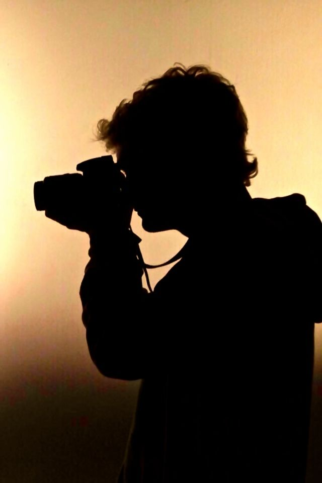
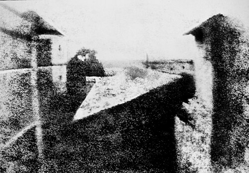
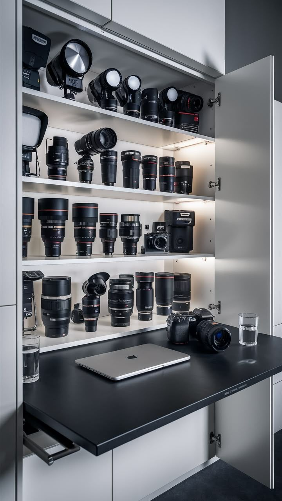
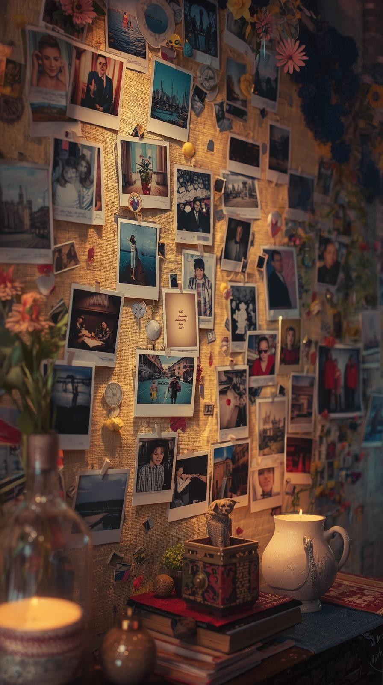
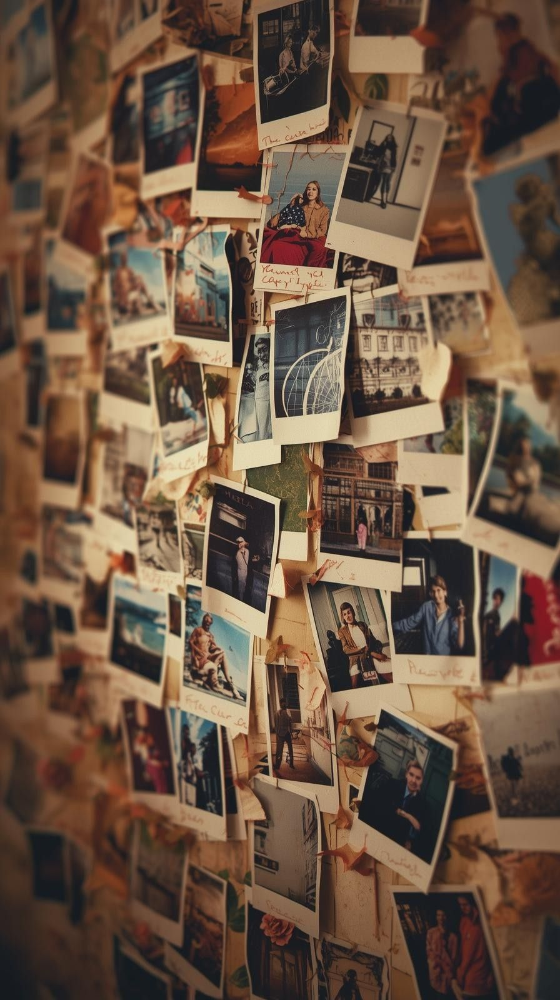

Cada foto, uma porta para a memória.
Um espaço para explorar a cultura da fotografia e guardar suas próprias histórias.
A História da Fotografia
As primeiras ideias de captura da luz
A história da fotografia é, antes de tudo, a história do desejo humano de preservar o instante. Muito antes da invenção das câmeras, filósofos gregos e estudiosos árabes já observavam fenômenos ópticos que serviriam de base para o que conhecemos hoje. A câmara obscura, uma caixa com um pequeno orifício capaz de projetar imagens invertidas do exterior, foi descrita há mais de mil anos e se tornou o primeiro passo para transformar luz em registro.

A Invenção da Fotografia

A primeira foto tirada pela humanidade
O salto definitivo ocorreu no século XIX, quando o francês Joseph Nicéphore Niépce conseguiu fixar pela primeira vez uma imagem em uma placa metálica usando betume – um experimento rudimentar, mas revolucionário. Poucos anos depois, Louis Daguerre aperfeiçoou o processo e apresentou o daguerreótipo ao mundo, marcando oficialmente o nascimento da fotografia em 1839. A partir desse momento, a sociedade passou a enxergar a realidade através de uma nova lente: a da captura permanente.
Evolução técninca: da chapa ao digital
Ao longo dos anos, avanços tecnológicos transformaram completamente a prática fotográfica. A criação do negativo e do filme fotográfico permitiu múltiplas reproduções; as câmeras portáteis popularizaram o hábito de fotografar; o desenvolvimento da cor trouxe novas possibilidades expressivas; e o surgimento das máquinas digitais, na década de 1990, inaugurou uma nova era. Com sensores eletrônicos substituindo o filme, fotografar se tornou mais rápido, acessível e integrado ao cotidiano.

A fotografia na era contemporânea
Hoje, vivemos um momento em que qualquer pessoa carrega uma câmera no bolso. A fotografia se tornou linguagem universal, ferramenta de documentação, arte e comunicação instantânea. Ainda assim, sua essência permanece a mesma desde Niépce: transformar a luz em memória.

Importância da Fotografia
A fotografia é um meio fundamental de preservar memórias e construir identidade. Cada imagem carregada de significado funciona como um registro emocional e temporal, guardando momentos que definem quem somos.
No mundo digital, seu impacto se amplifica. Fotografias circulam rapidamente, influenciam comportamentos, fortalecem a comunicação e conectam pessoas. Elas moldam a forma como percebemos o mundo.
Em essência, fotografar é mais do que registrar: é eternizar. É transformar experiências em memória e dar significado àquilo que vivemos.
